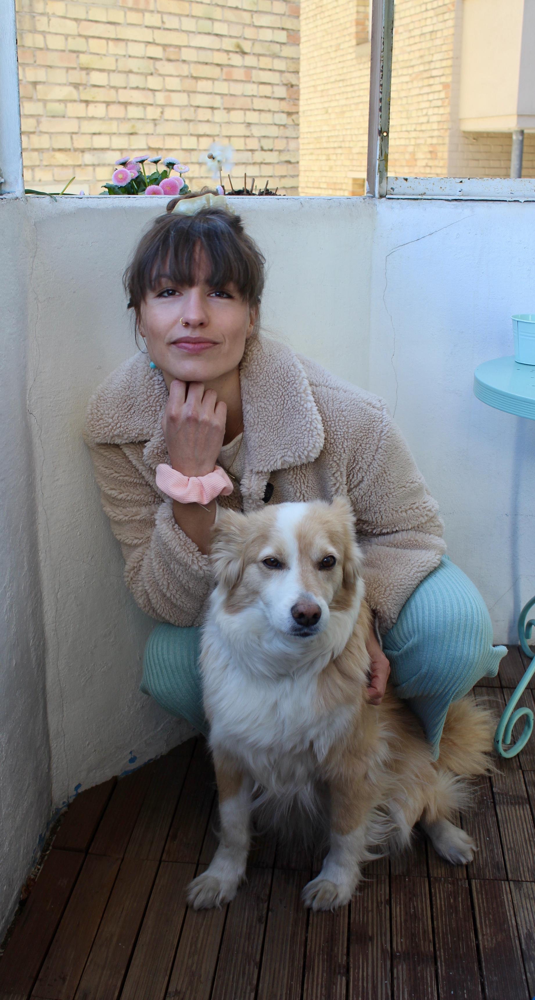
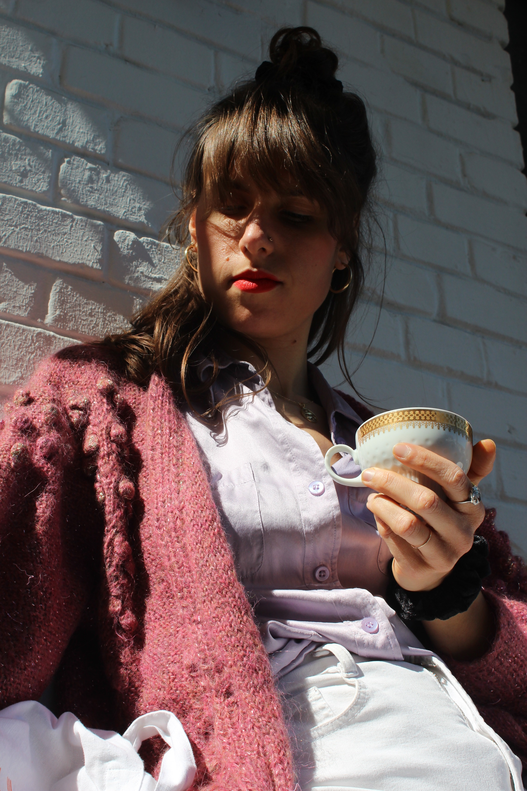

Teresa hat einige Jahre im Ausland gelebt und von dort Bürohund Pepe mitgebracht. Als
Marketingmanager liebt sie das Thema Brand Identity und Sustainability.


Charlottes Herz geht im Yoga und Psychedelic Breath – einer rituellen Atemtechnik – auf. Sie
ist seit vielen Jahren Stylist, unter anderem mit eigenem Salon.
Designaffinität und ein ausgeprägter Sinn für Ästhetik vereinen uns.
we love: Emotion & Bauchgefühl
statt Ration & Alltagstristesse.
Unseren Markennamen lieben wir, weil ein Gefühl von Mediterrané, lauen Nächten und der
Geruch von Pinien mitschwingt.
Rot war vom ersten Tag an klar. Penélope, roter Lippenstift und Du bist angezogen.
„Und es muss rot sein. Rot ist revolutionär.“ (Silja Ukena – Ein Jahr in Paris)
Inspiration ist das Pariser Mädchen:
“The Parisian way to be chic is to look super sharp for everyday things and then do effortless
casual for night occasions.” (Jeanne Damas)